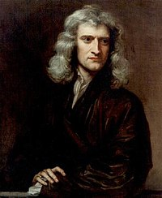

Matemáticos Famosos
Euclides
Sec III a.C.
Desenvolveu as bases da Geometria no plao e no espaço - chamada de Geometria Euclideana
Na Teoria dos Números, criou o algoritmo para o calculo do Máximo Divisor Comum
Pierre de Fermat
1601 - 1665
Notabilizou-se em Teoria dos Números, tendo conjeturado o famoso "Último Teorema de Fermat", que demorou séculos a ser demonstrado
Pitágoras
570 a.C - 500 a.C
Na Geometria descobriu o famoso "Teorema de Pitágoras que relaciona os lados de um triângulo retângulo"
Na Teoria dos Números provou que a soma dos divisores de um número, com exceção dele mesmo, é o próprio número
Newton
1643- 1727
Desenvolveu o binómio de Newton que permite escrever na forma canónica o polinómio correspondente à potência de um binómio"
Desenvolveu o método de Newton para estimar as raízes de uma função
Euler
1707 - 1783
Desenvolveu o Cálculo Infinitésimal
Descobriu a função eponencial para números complexos e a sua relação com as funções trigonométricas
Gauss

1977-1855
Descobriu o método dos mínimos quadrados
Descobriu o método a distribuição Normal (Gaussiana)
Imagens retiradas de www.wikipedia.pt
Informação consultada em www.wikipedia.pt
Próximo Matemático Famoso
Leibniz
No próximo mês será publicada informação sobre Leibniz